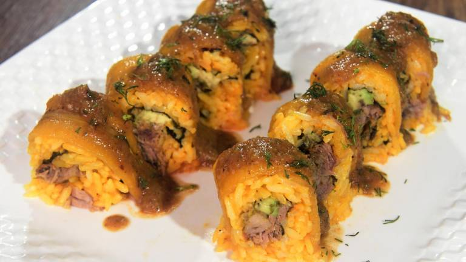
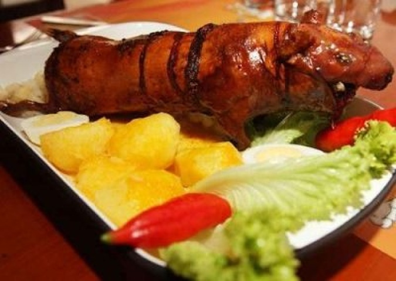

Ceviche de Camarones: El ceviche de camarones es un plato costero muy popular en Ecuador. Se prepara con camarones frescos cocidos en jugo de limón y se mezclan con cebolla morada finamente picada, tomate, cilantro fresco y ají picado para darle un toque de picante. El resultado es una explosión de sabores frescos y cítricos que captura la esencia misma de la costa ecuatoriana.

Ecuadorian Sushi: La versión ecuatoriana del sushi es una combinación de elementos tradicionales de la cocina japonesa con toques locales. Los rolls de pescado fresco se complementan con salsas de maní y ají, y a menudo se sirven con plátano verde frito para un contraste de texturas.
Pargo a la Sal: Este plato es una verdadera experiencia culinaria. Un pargo entero se cubre generosamente con una costra de sal y se cocina al horno. La costra de sal preserva la humedad del pescado, lo que da como resultado una carne tierna y sabrosa. Al romper la costra de sal en la mesa, se libera un aroma irresistible.
Pescado al Coco: Un pescado fresco se baña en una deliciosa salsa de coco, enriquecida con hierbas y especias locales. El coco le da un toque tropical a este plato, que es especialmente popular en las zonas costeras.
Langosta a la Parrilla: La langosta fresca se asa a la parrilla con mantequilla y ajo, lo que realza su sabor natural. Este plato es una indulgencia deliciosa y una verdadera delicia para los amantes de los mariscos.
Camarones a la Diabla: Los camarones se sumergen en una salsa picante elaborada con tomate, ajo y chiles. El picante de la salsa resalta los sabores de los camarones, creando un plato sabroso y con un toque de picante.
Llapingachos: Los llapingachos son una delicia de la Sierra ecuatoriana. Son pequeñas tortillas de papa rellenas de queso y cocinadas en una sartén hasta que estén doradas. Se sirven con una variedad de acompañamientos, como chorizo, huevo frito, aguacate y una salsa de maní llamada "ají de maní".
Hornado: El hornado es un plato tradicional de la Sierra que consiste en cerdo asado lentamente en horno de leña. La carne se sazona con hierbas y especias locales y se sirve con papas, maíz tostado y una salsa de tomate y cebolla.
Fritada: La fritada es un plato de cerdo frito en su propia grasa hasta que esté crujiente por fuera y tierno por dentro. Se sirve con mote (maíz cocido) y una salsa de ají picante.
Cuy Asado: El cuy, o conejillo de Indias, es una carne tradicionalmente consumida en la Sierra de Ecuador. Se asa entero y se sirve con papas y una variedad de salsas.
Sancocho: El sancocho es una sopa abundante que combina carne de cerdo, plátano, yuca, maíz y papas en un caldo sazonado con hierbas y especias. Es una comida reconfortante y nutritiva.

Mote Pata: El mote pata es un plato que combina mote (maíz cocido) con una salsa de maní, trozos de cerdo y huevo duro. Es una combinación deliciosa de sabores y texturas.
Maito de Pescado: En el Oriente, se prepara el maito de pescado, que consiste en envolver el pescado fresco en hojas de bijao (hojas de plátano) y cocinarlo a la parrilla o al horno. El pescado se sazona con hierbas, achiote y limón, lo que le da un sabor delicioso y ahumado.

Yuca con chicharrón: La yuca es un tubérculo importante en la dieta del Oriente ecuatoriano. Se cocina y se sirve con chicharrón, que son trozos de cerdo frito hasta que estén crujientes. Es un plato simple pero sabroso.
Tacacho con Cecina: Este plato amazónico se prepara con plátano verde machacado y frito, y se sirve con cecina (carne de cerdo salada y secada al sol). Es una combinación de sabores y texturas únicos.

Ceviche de Palmito: El ceviche de palmito es una alternativa vegetariana al ceviche de pescado. Se prepara con palmito en lugar de pescado y se mezcla con cebolla, tomate, cilantro, ají y jugo de limón.
Chonta: La chonta es el corazón tierno de una palma amazónica y se come cruda o cocida. Tiene una textura crujiente y se puede servir en ensaladas o en guisos
Guayusa: Aunque no es un plato, la guayusa es una bebida tradicional de la región del Oriente. Se hace con hojas de guayusa y se considera energizante. Es una bebida importante en la cultura indígena de la Amazonía ecuatoriana.